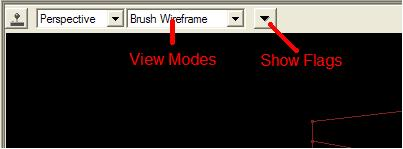
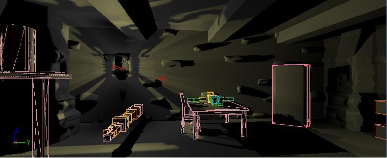

Show Flags
Overview
Show flags are rendering options which can be enabled and disabled independently. A viewport can have any combination of show flags enabled. In the editor, the show flags are modified using the dropdown button on the viewport's toolbar. In the game, show flags can be toggled using the show command.

Collision
When this show flag is enabled, collision primitives are rendered.
Command: show collision

Grid
When this show flag is enabled in the editor, the grid is rendered. This show flag does nothing in the game.
Bounds
When this show flag is enabled in the editor, the bounds of selected primitives are rendered. When this show flag is enabled in the game, the bounds of all primitives are rendered.
Command: show bounds
Static Meshes
When this show flag is enabled, static meshes are rendered. When this show flag is disabled, static meshes are hidden.
Command: show staticmeshes
Terrain
When this show flag is enabled, terrain is rendered. When this show flag is disabled terrain is hidden.
Command: show terrain
Terrain Collision
When this show flag is enabled, terrain collision is rendered. When this show flag is disabled terrain collision is hidden.
Command: show terraincollision
See the Terrain Collision Viewing page for more details.
BSP
When this show flag is enabled, BSP is rendered. When this show flag is disabled, BSP is hidden.
Command: show bsp
Skeletal Meshes
When this show flag is enabled, skeletal meshes are rendered. When this show flag is disabled, skeletal meshes are hidden.
Command: show skelmeshes
Constraints
When this show flag is enabled, rigid body constraints are rendered. When this show flag is disabled, rigid body constraints are hidden.
Command: show constraints
Fog
When this show flag is enabled, fog is rendered. When this show flag is disabled, fog is hidden.
Command: show fog=
Foliage
When this show flag is enabled, foliage is rendered. When this show flag is disabled, foliage is hidden.
Command: show foliage
Paths
When this show flag is enabled, routes between path nodes are rendered.
Command: show paths
Mesh Edges
When this show flag is enabled, the wireframe of each mesh is rendered on top of the normal view.
Command: show meshedges
Large Vertices
When this show flag is enabled, the vertices for selected brushes are rendered larger than normal. This flag will also display vertices for selected static meshes (this enables you to right click any vertex to snap a static mesh to the grid, the same way as for BSP brushes).
Zone Colors
When this show flag is enabled, BSP surfaces are rendered a solid colored based on the zone they face.
Portals
When this show flag is enabled, portal polygons are not rendered and visibility continues into the zone on the opposite side of the portal. When this flag is disabled, portal polygons are rendered and visibility does not extend through them. This show flag is enabled by default in the game, and disabled by default in the editor.
Hit Proxies
Hit Proxies are used for selection in UnrealEd, and knowing what the user is mousing over. Each selectable primitive is rendered with a unique color into the hit proxy render target. The area around the selection position is then read back and the highest priority hit proxy in that area is found, this is the selection.
You can customize the radius of the search area through an ini value in BaseEditor.ini:
[UnrealEd.HitProxy]
HitProxySize=5
The Hit Proxy view mode is useful for troubleshooting problems with selection.
View Modes
For a list of the various View Modes in the editor, see the View Modes page.
Important!
You are viewing documentation for the Unreal Development Kit (UDK).
If you are looking for the Unreal Engine 4 documentation, please visit the Unreal Engine 4 Documentation site.